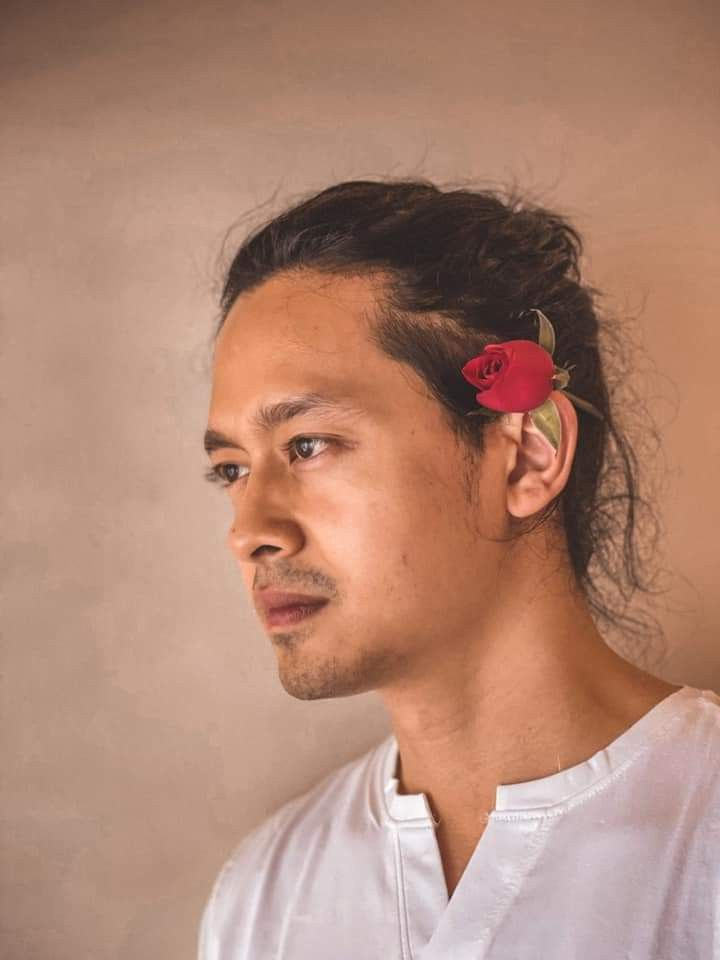

Daung
Description
Flimography
Comment

Act-name
Daung
Original-name
Thu Ya Aung
Born
(30,March,1990)Minhla,Bago Division,Myanmar
Age
33years
Height
5'11"
Nationality
Burmese, Buddhist
Status
Single
Occupation
Actor,Footballer,Model
Years-Active
2015-present
Awards
Star Awards 2018-Best Actor Award(Bagan Myo Thu Drama Series)
Description
Early Life and Education
Daung was born on 30 March 1990 in Minhla, Pyay District, Bago Division, Burma. He is the 4th son of 5 siblings. He moved to Mandalay in the second grade. Daung moved to Yangon to pursue a singing career, and subsequently signed a 3-year contract in 2010 to play for Southern Myanmar F.C. as a striker.
Career
Daung made his acting debut with a leading role in the film The Second Heart in 2015, after being selected by Satori Creative Works, a film production company, from among almost 500 amateur actors. He then starred a male lead in the film Little Umbrella Story alongside Paing Phyo Thu in 2017.[6][5] The film was both a domestic hit in Myanmar, and led to increased recognition for Daung.[7] In 2017, he gain increased attention and popularity with his role as Maung Maung Gyi in the television series Bagan Myo Thu alongside May Myint Mo and Htoo Aung, aired on MRTV-4 on 28 November 2018 which was a huge commercial success, topping television ratings and becoming the most watched Burmese television drama at that time.[8]
Flimography
Year
Title
Director
Co-Stars
Role
2019
The Only Mom
Chartchai Ketnust
Nine Nine,Wutt Hmone Shwe Yi
The Photographer
2019
Wind Up Dancer
Myo Myint Swe
Yan Aung,Zin Wine,Aung Lay,Angle Lamung,Alice Ong
Thurain
2019
Legend of the Rain
Win Lwin Htet
Ye Deight,Shwe Htoo,Wutt Hmone Shwe Yi
Di Hlaine
2020
Confession of a Woman
Mee Pwar
Sai Si Ton Khan,Paing Phyo Thu
Yu Maw
Flim(Cinema) Trailer
Other Flims and Television Series
Television Series
Bangan Myo Thu[2017]
Longing With Love[2019]
From ChaoPhraya To Irrawaddy[2022]
Flim
The Second Heart[2016]
Father's School[2016]
Little Umbrella Story[2017]
Leave a Comment
Name:
Email:
Comment:
Add